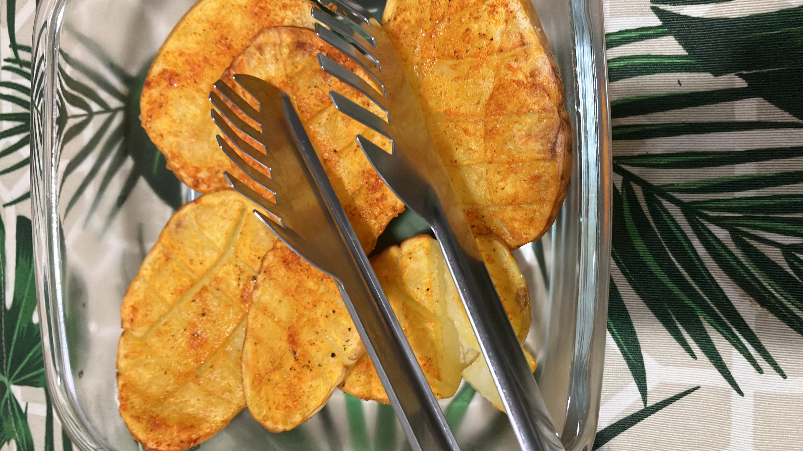

Potato Bomb

- Description -
Its an simple, easy and fast recipe of potato in the airfryer, it tastes good but inst health at all, and is a bomb of calories
- Ingredients -
- Potatoes
- Olive Oil
- Salt
- Black Pepper
- Paprika
- Sweet Paprika
- Steps -
- Wash and cut the potatoes in two, and make little cuts on the slices that you have without splitting it
- Put the olive oil on the potato with a brush tool
- Just put all the other ingredients(Salt, Black Pepper, Paprika, Sweet Paprika)
- Put the potatoes in the airfryer on 200 degrees for 30 minutes